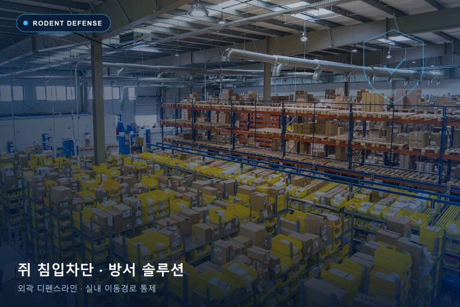

쥐 방제(방서)는 배설물·갉은 흔적·발자국 등 이동 경로를 조사하고, 건물 외곽 디펜스라인(Defense Line) 구축으로 추가 유입을 막으면서 실내 포획 및 살서제 모니터링을 병행하는 관리입니다. 에코플랜은 외곽 침입구와 실내 서식 지점을 구분해 현장 안전 조건에 맞는 방어 체계를 계획합니다.
쥐 3W 발생 원인 및 서식 단계 기준
눈에 보이는 개체 수만으로 번식 규모를 단정하기보다 왜 유인되는지(Why), 어디로 들어와 숨는지(Where), 언제 활동하는지(When)와 관찰 빈도를 함께 대조해야 정확한 방제 범위를 정할 수 있습니다.
| 3W 분석 항목 | 쥐 현장 확인 내용 |
|---|---|
| Why · 유인·발생 요인 | 식자재 보관소와 음식물 폐기물, 동절기·야간의 실내 온기, 천장 텍스 상부·가벽 내부 등 은폐된 공간이 주요 유인 요인입니다. |
| Where · 침입·서식 지점 | 외곽 하역장·출입문 하단 유격(0.6cm 이상), 외부 배관·전선 관통부, 배수 트렌치, 천장 내부 및 창고 적치물 뒤편 이동 통로. |
| When · 주요 활동 시점 | 인적이 드문 심야·새벽이나 영업 종료 후 활동이 집중되며, 천장 소음이나 포장재 훼손이 반복되면 실내 정착 가능성이 높습니다. |
쥐 관찰 마릿수·징후에 따른 1~3단계 서식 판별 기준
| 서식 단계 | 관찰 빈도 및 징후 | 현장 상태 해석 |
|---|---|---|
| 1단계 · 침입 초기 단계 | 배설물이나 식자재·포장재 갉은 흔적 발견 | 외부에서 출입문 하단이나 배관 틈새를 통해 유입되어 먹이와 이동 경로를 탐색하는 단계입니다. |
| 2단계 · 실내 서식 단계 | 천장·벽체 소음과 함께 실제 쥐가 목격됨 | 실내 천장 상부, 가벽 내부, 창고 구석에 고정 이동 통로(Runway)와 은신처를 확보한 단계입니다. |
| 3단계 · 확산·복수 서식 단계 | 쥐 소리·배설물·이동 개체가 2마리 이상 반복 목격 | 복수 개체가 유입되었거나 실내 번식·영역 확장이 진행 중이어서 외곽 차단과 실내 집중 방서가 동시에 필요한 단계입니다. |
외곽 디펜스라인(Defense Line) 및 실내 방서 구역별 관리 기준
| 관리 구역 | 핵심 점검 지점 | 적용 방법 및 안전 기준 |
|---|---|---|
| 건물 외곽 · 침입 경계선 | 하역장 도어 하단, 외벽 배관·전선 관통부, 외부 폐기물 보관소 주변 | 외곽 전용 약제상자(살서제) 고정 배치 및 틈새 물리적 차단(방서망·보수 제안)으로 실내 진입 원천 억제 |
| 실내 활동 · 보관 구역 | 식자재 창고, 천장 텍스 상부, 주방 하부, 기계실·분전반 주변 | 식품·이용자 안전을 고려한 물리적 포획 트랩 배치, 섭식·포획 기록 추적 및 전선·설비 훼손 위험 점검 |
쥐 발생 의심 신호와 서식 흔적
- 식자재 창고나 주방 구석에서 쌀알·씨앗 형태의 배설물이나 포장재를 갉은 흔적이 보입니다.
- 조용한 야간·새벽 시간대에 천장 위나 가벽 내부에서 긁거나 달리는 소리가 반복됩니다.
- 전선 피복, 단열재, 하단 문틀 모서리에 치아로 갉은 손상 흔적이 나타납니다.
쥐 방제를 위한 현장 핵심 점검 지점
- 출입문 하단 유격(0.6cm 이상), 외벽·배관·전선 관통부, 하역장 개방 시간
- 외부 폐기물 보관 공간의 밀폐 상태와 건물 외곽 적치물
- 식자재 창고 팔레트 하부와 천장 텍스 내부의 이동 가능 경로
쥐 상담 전 직접 할 수 있는 환경 관리 및 주의사항
- 식자재·사료·폐기물은 비닐이나 종이박스 대신 단단한 밀폐 용기에 보관하고 바닥·벽면에서 이격합니다.
- 쥐 배설물이나 사체는 맨손으로 만지거나 마른 빗자루로 쓸어 먼지를 날리지 말고, 장갑·마스크 착용 후 소독제를 적셔 닦아냅니다.
- 발견된 배설물·갉은 흔적 위치를 사진으로 기록하고 구멍을 무작정 막기 전에 실내 잔류 개체 포획 순서를 전문가와 상의합니다.
에코플랜의 쥐 맞춤 방제 공법과 사후 관리
건물 외부 침입 경로(디펜스라인)와 실내 이동 통로를 나누어 조사합니다. 어린이·반려동물·비표적 동물의 접근 가능성과 식품 취급 여부를 고려해 전용 살서제 상자와 포획 장비를 안전하게 배치하고, 섭식·포획 추이와 차단 유지 상태를 정기 점검합니다.
방문 횟수와 주기는 현장 조사와 모니터링 결과를 바탕으로 협의합니다. 공간 면적, 시설 구조, 발생 단계(1~3단계), 작업 범위에 따라 견적이 달라지며 한 번의 작업만으로 모든 재유입이 영구 차단되는 것은 아니므로 환경개선과 사후 점검을 함께 안내합니다.
쥐 방제 자주 묻는 질문
쥐가 들어오는 구멍만 바로 막으면 해결되나요?
유입 차단은 필수 조치이지만, 이미 실내 천장이나 벽체 안에 들어온 개체가 있는 상태에서 출입구만 막으면 쥐가 다른 약한 벽체·전선을 갉거나 실내 깊숙이 숨어 사체 악취 문제를 일으킬 수 있습니다. 실내 포획·유인 동선과 차단 순서를 함께 설계해야 합니다.
시중 쥐약을 직접 놓아도 되나요?
살서제는 환경부 허가·표시사항을 준수해야 하며 어린이·반려동물·야생동물이 직접 접촉하지 못하도록 전용 안전 상자 내에 관리해야 합니다. 또한 보이지 않는 천장이나 벽체 내부에서 폐사할 경우 수거가 어려우므로 식품 취급 업장이나 실내 발생 현장은 전문가와 방서 방식을 협의하세요.
HACCP 제조시설이나 외식 매장도 영업 중 방서 관리가 가능한가요?
생산·조리 구역 내부에는 식품 오염 위험이 없도록 물리적 포획·모니터링 장비를 적용하고, 건물 외곽 경계선에 살서제 디펜스라인을 구축하는 방식으로 구분 운영합니다. 점검 위치 도면과 포획 추이 기록은 시설 관리 기준에 맞춰 협의합니다.
시설별 적용 범위와 작업 조건은 현장 확인 후 안내합니다. 서비스 내용 문의